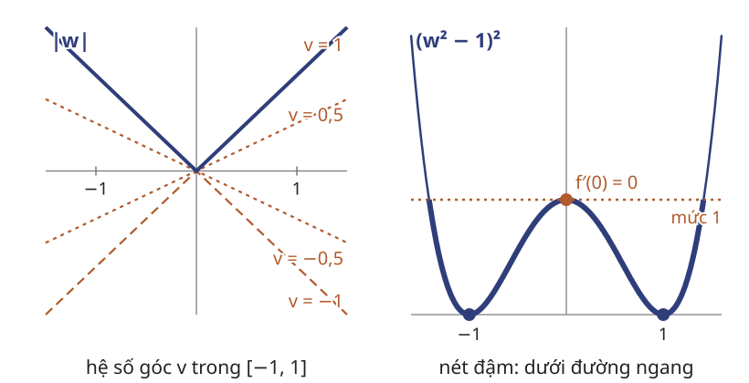
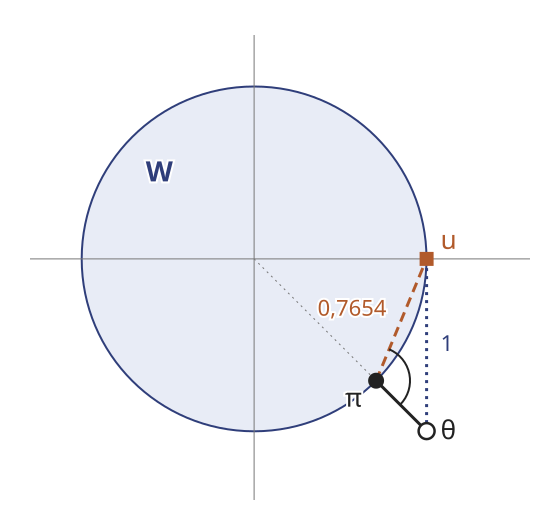
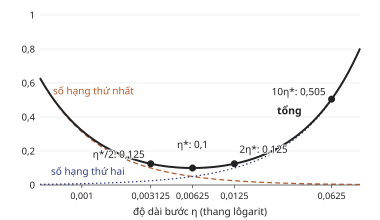

Với hàm mục tiêu lồi, gradient ngẫu nhiên không chệch có mô-men bậc hai bị chặn và độ dài bước chọn theo số vòng lặp, hạ gradient ngẫu nhiên có chiếu có cận của độ chênh tối ưu kì vọng tại điểm lặp trung bình tỉ lệ nghịch với căn bậc hai của số vòng lặp.
Lý thuyết học thống kê · Năm học 2026–2027, học kỳ 1
Khoa Công nghệ thông tin, Trường Đại học Công nghệ, ĐHQGHN
Tiên quyết và quy ước
Nhắc lại: sai số tối ưu thực nghiệm $\operatorname{opt}_S(w)=L_S(w)-\inf_{w'\in W}L_S(w')$ (Định nghĩa 04.2); (O2): $\operatorname{opt}_S(A(S))\le\epsilon_{\mathrm{opt}}$ với mọi $S$ (Bài 01).
(T1): $S\sim D^m$. Bất đẳng thức Markov (Bổ đề 02.2): với $V\ge0$, $\alpha>0$, $\Pr(V\ge\alpha)\le\mathbb EV/\alpha$.
Tính chất tháp (tower property) $\mathbb E\,\mathbb E[V\mid\mathcal G]=\mathbb EV$; lấy ra đại lượng đã biết (taking out what is known): $\mathbb E[VU\mid\mathcal G]=V\,\mathbb E[U\mid\mathcal G]$ khi $V$ đo được theo $\mathcal G$.
Kí hiệu: $w\in\mathbb R^p$; tích vô hướng $\langle\cdot,\cdot\rangle$, chuẩn Euclid $\lVert\cdot\rVert$; $L_S(w)=L_S(h_w)$ với $h_w(x)=\langle w,x\rangle$.
Mục tiêu
Chứng minh cận kì vọng cho hạ gradient ngẫu nhiên trên hàm lồi, chỉ chỗ dùng giả thiết.
Kiểm tra tính không chệch có điều kiện cho cách rút có hoàn lại.
Chọn độ dài bước, số vòng lặp từ cận, theo kì vọng và xác suất cao.
So sánh hạ gradient, hạ gradient ngẫu nhiên, lô nhỏ theo số cập nhật, số quan sát.
Dựng phản ví dụ bỏ giả thiết; giải thích cận không chặn điểm lặp cuối.
Bất đẳng thức lồi hữu hạn (còn gọi là bất đẳng thức Jensen hữu hạn): $F\big(\sum_t\alpha_tw_t\big)\le\sum_t\alpha_tF(w_t)$, $\alpha_t\ge0$, $\sum_t\alpha_t=1$.
Dưới gradient và dưới vi phân

Ví dụ. $\lvert u\rvert\ge\lvert0\rvert+vu$ với mọi $u$ khi $\lvert v\rvert\le1$.
Định nghĩa 05.2. $v$ là dưới gradient (subgradient) của $F$ tại $w$ khi $F(u)\ge F(w)+\langle v,u-w\rangle$ với mọi $u\in\mathbb R^p$ (bất đẳng thức dưới gradient, subgradient inequality).
Dưới vi phân (subdifferential) $\partial F(w)$: tập mọi dưới gradient. Với $F$ lồi, hữu hạn trên $\mathbb R^p$: $\partial F(w)\ne\varnothing$, và $\partial F(w)=\{\nabla F(w)\}$ khi $F$ khả vi tại $w$.
Ba quy tắc tính dưới gradient
Mệnh đề 05.3.Giả thiết: $F,F_1,\ldots,F_m:\mathbb R^p\to\mathbb R$, $w\in\mathbb R^p$. Bảo đảm: ba khẳng định tất định.
$F$ lồi, khả vi tại $w$: $\nabla F(w)\in\partial F(w)$.
Ví dụ 05.3. Hàm lỗi bình phương (squared loss) lồi theo $w$; tại $w=0$, $\nabla_w\ell(0,z_i)=-2y_ix_i$ là $(-2,0)$; $(0,2)$; $(0,0)$; theo (a), (b), $\nabla L_S(0)=(-\tfrac23,\tfrac23)$.
Rút đều một chỉ số cho một véc-tơ có trung bình $\nabla L_S(0)$.
Ví dụ: dưới gradient của hàm lỗi bản lề
$x=(1,2)$, $y=1$, $\tilde y=2y-1=1$; cực đại của hai hàm afin (affine function):
$w=0$: chỉ nhánh thứ hai đạt cực đại, nên $(-1,-2)\in\partial\ell(0)$ (Mệnh đề 05.3(a), (c)).
Điểm gãy $w_0=(0{,}5;0{,}25)$: hai nhánh cùng bằng $0$; các véc-tơ $0$, $(-1,-2)$ và $(-\alpha,-2\alpha)$, $\alpha\in[0,1]$, là dưới gradient.
$v=(-1{,}2;-2{,}4)$, $u=(0{,}4;0{,}05)$: $\ell(u)=0{,}5<0{,}6=\ell(w_0)+\langle v,u-w_0\rangle$, nên $v\notin\partial\ell(w_0)$.
Kết luận: $\partial\ell(w_0)$ chứa đoạn nối $0$, $(-1,-2)$; $v\notin\partial\ell(w_0)$.
Hằng số Lipschitz và chuẩn của dưới gradient
Định nghĩa 05.4. $F$ là $G$-Lipschitz trên $C$ khi $\lvert F(w)-F(u)\rvert\le G\lVert w-u\rVert$ với mọi $w,u\in C$.
Mệnh đề 05.5.Giả thiết: $F$ lồi; $U\subset\mathbb R^p$, mở ở phần (b); $G\ge0$. Bảo đảm: tất định.
Mỗi $u\in U$ có một $v_u\in\partial F(u)$ với $\lVert v_u\rVert\le G$: $F$ là $G$-Lipschitz trên $U$.
$F$ là $G$-Lipschitz trên $U$: $\lVert v\rVert\le G$ với mọi $w\in U$, $v\in\partial F(w)$.
Ý nghĩa: $G$ chặn mọi dưới gradient; đó là hằng số $G$ của các cận sau.
Ví dụ. Hàm lỗi bản lề, logistic: $\lVert x\rVert$-Lipschitz; $w^2$ không Lipschitz trên $\mathbb R$.
Bài tập: dưới gradient của rủi ro thực nghiệm với hàm lỗi bản lề
Câu hỏi: mẫu $S$ gồm hai quan sát $((1,2),1)$ và $((2,1),0)$, với hàm lỗi bản lề. Tìm một dưới gradient của $L_S$ tại $w=0$.
Lời giải: quan sát thứ nhất: $\tilde y_1=1$, $1-\langle0,x_1\rangle=1>0$, gradient $-\tilde y_1x_1=(-1,-2)$.
Quan sát thứ hai: $\tilde y_2=-1$, $1+\langle0,x_2\rangle=1>0$, gradient $-\tilde y_2x_2=(2,1)$.
Theo Mệnh đề 05.3(b): $\tfrac12\big[(-1,-2)+(2,1)\big]=(0{,}5;-0{,}5)\in\partial L_S(0)$.
3.Phép chiếu và hạ gradient ngẫu nhiên
Chiếu không làm xa điểm nào của tập tham số; gradient một quan sát rút đều có trung bình là dưới gradient.
phép chiếu · oracle gradient ngẫu nhiên · điểm lặp trung bình · lịch sử
Phép chiếu lên tập lồi đóng
Gradient $2(\langle w,x\rangle-y)x$ có chuẩn tăng theo $\lVert w\rVert$: cận $G$ chỉ đúng trên tập bị chặn.
Định nghĩa 05.7. Với $W$ khác rỗng, đóng, lồi, phép chiếu Euclid (Euclidean projection) $\operatorname{proj}_W(\theta)$ là điểm của $W$ gần $\theta$ nhất; nó tồn tại vì $W$ đóng, duy nhất vì $W$ lồi.

Ví dụ. Quả cầu bán kính $B$: $\operatorname{proj}_W(\theta)=B\theta/\lVert\theta\rVert$ khi $\lVert\theta\rVert>B$.
Trực quan. Góc giữa $\theta-\pi$ và mọi hướng $u-\pi$ vào $W$ không nhọn.
Bổ đề 05.8.Giả thiết: $W$ khác rỗng, đóng, lồi; $\theta\in\mathbb R^p$; $\pi=\operatorname{proj}_W(\theta)$. Bảo đảm: tất định.
Bất đẳng thức biến phân (variational inequality): $\langle\theta-\pi,u-\pi\rangle\le0$ với mọi $u\in W$; chỉ $\pi$ có tính chất này.
Với mọi $u\in W$: $$\lVert\pi-u\rVert^2\le\lVert\theta-u\rVert^2-\lVert\theta-\pi\rVert^2\le\lVert\theta-u\rVert^2.$$
Ý nghĩa: chiếu về $W$ không làm tăng khoảng cách tới điểm nào của $W$.
Oracle gradient ngẫu nhiên
Oracle thay $\nabla L_S$ ($m$ gradient) bằng véc-tơ ngẫu nhiên rẻ.
Định nghĩa 05.10. Các lần rút $\xi_1,\xi_2,\ldots$ độc lập, cùng phân bố $P_\xi$; gradient ngẫu nhiên (stochastic gradient) $\varphi(w,\xi)$ có trung bình $\psi(w)=\mathbb E_\xi\varphi(w,\xi)$.
$(\varphi,P_\xi)$ là oracle gradient ngẫu nhiên (stochastic gradient oracle) cho $F$ với hằng số $G$ khi mọi $w\in W$ thỏa:
(G1) không chệch: $\psi(w)\in\partial F(w)$; (G2) mô-men bậc hai bị chặn: $\mathbb E_\xi\lVert\varphi(w,\xi)\rVert^2\le G^2$.
Trên $L_S$: một vòng GD tốn $m$ gradient trên một quan sát, SGD tốn một.
Thuật toán 05.9. Hạ gradient có chiếu: $v_t=v(w_t)\in\partial F(w_t)$, $w_{t+1}=\operatorname{proj}_W(w_t-\eta v_t)$.
Thuật toán 05.11. Hạ gradient ngẫu nhiên có chiếu: rút $\xi_t\sim P_\xi$ độc lập với lần rút trước, $g_t=\varphi(w_t,\xi_t)$, $w_{t+1}=\operatorname{proj}_W(w_t-\eta g_t)$.
Cả hai dùng $w_1\in W$ tất định, độ dài bước (step size, learning rate) $\eta>0$ hằng, $T$ chọn trước, trả về điểm lặp trung bình (averaged iterate) $\bar w_T=\frac1T\sum_{t=1}^Tw_t\in W$.
Ví dụ: ba bước hạ gradient ngẫu nhiên có chiếu
Ví dụ 05.6. Oracle của Ví dụ 05.5 trên quả cầu đơn vị $W$, $G=4$; $w_1=0$, $\eta=0{,}5$.
$i_1=1$: $w_2=(1,0)$, $L_S\approx0{,}4533$;
$i_2=2$: $(1,-1)$ chiếu thành $w_3\approx(0{,}7071;-0{,}7071)$, $L_S\approx0{,}0639$.
$i_3$
$1$
$2$
$3$
$L_S(w_4)$
$0{,}0710$
$0{,}1021$
$0{,}0694$
Diễn giải: $\mathbb EL_S(w_4)\approx0{,}0808>0{,}0639$: mọi lựa chọn làm $L_S$ tăng; bước GD từ $w_3$ cho $0{,}0614$, gần $\min_WL_S\approx0{,}06112$ tại $w^*\approx(0{,}7473;-0{,}6645)$.
Tính không chệch có điều kiện
Kí hiệu: lịch sử (history, filtration) $\mathcal F_t=\sigma(\xi_1,\ldots,\xi_t)$, $\mathcal F_0$ tầm thường.
Trực quan. Để chặn $\mathbb E\langle g_t,w_t-u\rangle$, cố định $\mathcal F_{t-1}$: $w_t$ cố định, $\xi_t$ vẫn có phân bố $P_\xi$.
Bổ đề 05.12.Giả thiết: (G1), (G2); $w_t$, $g_t$ của Thuật toán 05.11; $u\in W$ cố định. Bảo đảm: với mọi $t\ge1$,
$w_t\in W$ là hàm đo được của $\xi_1,\ldots,\xi_{t-1}$;
kì vọng có điều kiện (conditional expectation), hầu chắc chắn (almost surely): $\mathbb E[g_t\mid\mathcal F_{t-1}]=\psi(w_t)\in\partial F(w_t)$, $\mathbb E\big[\lVert g_t\rVert^2\mid\mathcal F_{t-1}\big]\le G^2$;
$\mathbb E\lVert g_t\rVert^2\le G^2$ và $\mathbb E\langle g_t,w_t-u\rangle=\mathbb E\langle\psi(w_t),w_t-u\rangle$.
Kì vọng có điều kiện theo lịch sử
Kỹ thuật. Với $w_t$, $a_t$ đo được theo $\mathcal F_{t-1}$ và $\langle g_t,a_t\rangle$ khả tích:
Đẳng thức đầu: tính chất tháp, lấy ra đại lượng đã biết, như lấy điều kiện theo tập huấn luyện rồi bỏ điều kiện (Bài 04).
Đẳng thức sau: $\xi_t$ độc lập với $\mathcal F_{t-1}$.
Dùng khi gradient ngẫu nhiên nhân với đại lượng đã biết trước bước $t$; ở đây $a_t=w_t-u$.
Bài tập: kì vọng của tích vô hướng ở bước thứ hai
Câu hỏi: (Bài tập 05.3(b)) thiết lập của Ví dụ 05.6, $i_1$, $i_2$ rút đều có hoàn lại, $u=w^*\approx(0{,}7473;-0{,}6645)$. Tính ba giá trị có thể của $w_2$ và $\psi(w_2)$. Tính $\mathbb E\langle g_2,w_2-u\rangle$ bằng cách liệt kê chín cặp $(i_1,i_2)$ đồng khả năng, và bằng vế phải của Bổ đề 05.12(c). Tính thêm $\mathbb EL_S(w_2)$.
Lời giải: chín ô và cột cuối cùng có trung bình $0{,}8460$; $\mathbb EL_S(w_2)\approx0{,}5556$.
$i_1$
$w_2$
$\psi(w_2)$
$i_2=1$
$i_2=2$
$i_2=3$
trung bình hàng
$1$
$(1,0)$
$(0{,}24;0{,}9867)$
$0$
$1{,}3289$
$0{,}8198$
$0{,}7162$
$2$
$(0,-1)$
$(-0{,}9867;-0{,}4267)$
$1{,}4947$
$0$
$1{,}1469$
$0{,}8805$
$3$
$0$
$(-\tfrac23,\tfrac23)$
$1{,}4947$
$1{,}3289$
$0$
$0{,}9412$
4.Bất đẳng thức một bước và cận kì vọng
Phép chiếu, kì vọng theo lịch sử và tính lồi ghép lại cho cận kì vọng tại điểm lặp trung bình.
bất đẳng thức một bước · tổng triệt tiêu · điểm lặp trung bình · độ dài bước
Bất đẳng thức một bước
Trực quan. Không chiếu, với $u\in W$: $\lVert w-\eta g-u\rVert^2=\lVert w-u\rVert^2-2\eta\langle g,w-u\rangle+\eta^2\lVert g\rVert^2$.
Số hạng thứ hai kéo về phía $u$ khi $\langle g,w-u\rangle>0$; số hạng $\eta^2\lVert g\rVert^2$ có mặt cả khi $g$ là gradient đúng.
Mệnh đề 05.13.Giả thiết: $W$ khác rỗng, đóng, lồi; $w,g\in\mathbb R^p$, $\eta>0$, $w^+=\operatorname{proj}_W(w-\eta g)$; $u\in W$.
Bảo đảm: tất định, không dùng tính lồi của hàm mục tiêu hay xác suất; dấu bằng khi $W=\mathbb R^p$:
Không chiếu: vế phải $0{,}5053-0{,}1764+1\approx1{,}3289$; có chiếu: $0{,}5053-0{,}0034+1\approx1{,}5019.$
Cận kì vọng cho hạ gradient ngẫu nhiên có chiếu
Trực quan. Theo kì vọng, mỗi bước tiến về phía $u$ ít nhất $F(w_t)-F(u)$ và trả thêm $\eta G^2/2$; tổng phần tiến bị chặn bởi $\lVert w_1-u\rVert^2/(2\eta)$.
Định lý 05.14.Giả thiết: (C) $F$ lồi, $W$ khác rỗng, đóng, lồi; $(\varphi,P_\xi)$ thỏa (G1), (G2) với hằng số $G$;
Các số hạng giữa triệt tiêu; chỉ còn số hạng đầu $a_1$.
$F$ lồi và $c_t\ge F(w_t)-F(u)$: chia cho $T$ được $F(\bar w_T)-F(u)\le\frac1T\sum_tc_t$; với SGD, lấy kì vọng: $\mathbb EF(\bar w_T)-F(u)\le\frac1T\sum_t\mathbb Ec_t$.
Dùng khi bất đẳng thức một bước có dạng hiệu hai giá trị liên tiếp của đại lượng không âm cộng sai số; ở Định lý 05.14, $a_t=\lVert w_t-u\rVert^2/(2\eta)$.
Độ dài bước tối ưu của cận
Trực quan. Với $\lVert w_1-u\rVert=R$: $R^2/(2\eta T)$ giảm, $\eta G^2/2$ tăng theo $\eta$; với $\eta$ cố định, vế phải giảm về $\eta G^2/2$ khi $T$ tăng.
Tổng nhỏ nhất tại $\eta^*=R/(G\sqrt T)$, nơi hai số hạng bằng nhau.
Ví dụ. $R=1$, $G=4$, $T=1600$: $\eta^*=0{,}00625$ cho $0{,}1$; $2\eta^*$ hoặc $\eta^*/2$ cho $0{,}125$; $10\eta^*$ cho $0{,}505$.

Độ dài bước theo số vòng lặp
Hệ quả 05.15.Giả thiết: như Định lý 05.14; $G>0$, $R>0$, $\eta=R/(G\sqrt T)$. Bảo đảm: theo kì vọng theo $\xi$,
Câu hỏi: chỉ biết một ước lượng $\hat G$ của $G$. Người dùng chọn $T=\lceil R^2\hat G^2/\epsilon^2\rceil$ và $\eta=R/(\hat G\sqrt T)$. Với $R=1$, $G=4$, $\epsilon=0{,}1$, tính $T$, $\eta$ và $Q(\eta,T)$ khi $\hat G=8$ và khi $\hat G=2$. Trường hợp nào giữ được bảo đảm $\epsilon$?
Câu hỏi: trong thiết lập của Bài tập 05.3(b), thay lần rút thứ hai bằng $i_2=i_1$. Tính $\mathbb E\langle g_2,w_2-u\rangle$. Chỉ ra giả thiết bị vi phạm và bước hỏng trong chứng minh Định lý 05.14.
Lời giải: $2\eta\lVert x_i\rVert^2=1$, nên $g_2=0$ và $\mathbb E\langle g_2,w_2-u\rangle=0$.
$i_2$ không độc lập với $i_1$: $\mathbb E[g_2\mid\mathcal F_1]=\varphi(w_2,i_1)\ne\psi(w_2)$, Bổ đề 05.12(b) hỏng.
Bước 3 cần vế trái $\ge\mathbb EL_S(w_2)-L_S(u)\approx0{,}5556-0{,}06112\approx0{,}4944$, mà vế trái bằng $0$.
6.Hạ gradient ngẫu nhiên trên rủi ro thực nghiệm và lô nhỏ
Với hàm lỗi lồi và đủ số bước, SGD có sai số tối ưu thực nghiệm nhỏ theo kì vọng hoặc với xác suất cao.
nguồn ngẫu nhiên riêng · sai số tối ưu thực nghiệm · xác suất cao · lô nhỏ
Thuật toán học có nguồn ngẫu nhiên riêng
Với $F=L_s$, Hệ quả 05.15 chặn sai số tối ưu thực nghiệm; đầu ra $\bar w_T$ ngẫu nhiên cả khi $s$ cố định.
Định nghĩa 05.18. Thuật toán học có nguồn ngẫu nhiên riêng (randomized learning algorithm): họ ánh xạ $A_m:\mathcal Z^m\times\Xi\to\mathcal H$ ($\mathcal Z$, $\mathcal H$ như Định nghĩa 01.4, $\xi\in\Xi$) với $(s,\xi,z)\mapsto\ell(A_m(s;\xi),z)$ đo được; viết $A(S;\xi)$, $\xi\sim P_\xi$ độc lập với $S$.
Ví dụ. SGD có chiếu trên $L_S$: $A(S;\xi)=\bar w_T$, $\xi=(\xi_1,\ldots,\xi_{T-1})$; $\mathcal H$ là lớp hàm điểm số (score function) $\{h_w:w\in W\}$, $h_w(x)=\langle w,x\rangle\in\mathbb R$.
Hạ gradient ngẫu nhiên trên rủi ro thực nghiệm
Trực quan. Hệ quả 05.19 bảo đảm cho một thuật toán trên $s$ cố định: nó chặn $\operatorname{opt}_s$, không chặn $L_D$.
Hệ quả 05.19.Giả thiết: tập huấn luyện $s=(z_1,\ldots,z_m)$ cố định; $\ell(\cdot,z)\ge0$ lồi; dưới gradient đo được $v(w,z)$, $\lVert v(w,z_i)\rVert\le G$ trên $W$, $G>0$;
$W$ khác rỗng, đóng, lồi, bị chặn, $w_1\in W$, $R\ge\sup_{u\in W}\lVert w_1-u\rVert$; Thuật toán 05.11, $\varphi(w,i)=v(w,z_i)$, $i_t$ đều, có hoàn lại; $\eta=R/(G\sqrt T)$.
Mệnh đề 05.3(b) (rút đều): $\psi(w)=\frac1m\sum_iv(w,z_i)\in\partial L_s(w)$, tức (G1); $\frac1m\sum_i\lVert v(w,z_i)\rVert^2\le G^2$, tức (G2); rút có hoàn lại: các $\xi_t$ độc lập.
Mọi $u\in W$ thỏa $\lVert w_1-u\rVert\le R$ (giả thiết $W$ bị chặn); Hệ quả 05.15(b) cho (a).
$\operatorname{opt}_s(\bar w_T)\ge0$ vì $\bar w_T\in W$; Markov (Bổ đề 02.2) và (a): xác suất $\le RG/(\epsilon_{\mathrm{opt}}\sqrt T)\le\delta'$.
Ý nghĩa: SGD đạt mức (O2) với xác suất $\ge1-\delta'$: khi $\delta'=0{,}05$, khoảng 95/100 lần chạy độc lập trên cùng $s$ cho $\operatorname{opt}_s<\epsilon_{\mathrm{opt}}$.
Lô nhỏ (mini-batch) cỡ $b$ (batch size), giữa hai đầu mút của Ví dụ 05.9: $\varphi_b(w,\bar\xi)=\frac1b\sum_{j=1}^b\varphi(w,\xi^{(j)})$, $b$ lần rút độc lập theo $P_\xi$.
Nhắc lại: thêm bớt kì vọng rồi bình phương (Bài 04); $e_j=\varphi(w,\xi^{(j)})-\psi(w)$ không tương quan: số hạng chéo bằng $0$.
Mệnh đề 05.20.Giả thiết: (G1); $\mathbb E_\xi\lVert\varphi(w,\xi)-\psi(w)\rVert^2\le\sigma^2$, $\lVert\psi(w)\rVert\le G_F$ trên $W$.
Hệ quả 05.15 với $G_b$: $T\ge R^2G_b^2/\epsilon^2$ bước, tức $bT$ lần gọi oracle gốc.
Ví dụ: số bước và số quan sát theo kích thước lô
Ví dụ 05.15. $G_F^2=1$, $\sigma^2=15$, nên $G^2=16$ khi $b=1$; $R=1$, $\epsilon=0{,}1$, $m=10^4$.
$T(b)=\lceil100(1+15/b)\rceil$; số quan sát phải xử lý là $bT(b)$; GD theo Hệ quả 05.16.
$b$
$1$
$4$
$16$
$64$
$256$
GD
$T(b)$
$1600$
$475$
$194$
$124$
$106$
$100$
Số quan sát
$1600$
$1900$
$3104$
$7936$
$27\,136$
$10^6$
Diễn giải: $T(b)$ giảm từ $1600$ xuống $194$ khi $b$ tới $16$, quanh ngưỡng $b=\sigma^2/G_F^2=15$, rồi giảm dần về $100$; số quan sát tăng từ $1600$ lên $27\,136$.
Kết luận: theo các cận, lô lớn giảm số lần cập nhật nhưng tăng số quan sát phải xử lý.
Bài tập: kích thước lô cho số bước gần bằng hạ gradient
Thiết lập của Ví dụ 05.15, với $\sigma^2$ thay đổi: $T(b)=\big\lceil R^2(G_F^2+\sigma^2/b)/\epsilon^2\big\rceil$; GD cần $R^2G_F^2/\epsilon^2$ bước (Hệ quả 05.16).
Câu hỏi: chứng minh $T(b)$ không quá $1{,}1$ lần số bước của GD khi và chỉ khi $b\ge10\,\sigma^2/G_F^2$. Tính $b$ nhỏ nhất và số quan sát khi đó, với $\sigma^2=3$ và với $\sigma^2=15$.
Lời giải: GD cần $100$ bước; $T(b)\le110$ khi và chỉ khi $100(1+\sigma^2/b)\le110$, tức $b\ge10\,\sigma^2$.
$\sigma^2=3$: $b=30$, $T(30)=110$, $3300$ quan sát; $\sigma^2=15$: $b=150$, $T(150)=110$, $16\,500$ quan sát.
7.Tổng kết
Bất đẳng thức một bước, tổng triệt tiêu và điểm lặp trung bình cho mọi cận của bài.
Hệ quả 05.19: $\operatorname{opt}_s$; kì vọng, xác suất $\ge1-\delta'$ theo $\xi$
$\ell\ge0$ lồi, $\lVert v\rVert\le G$; rút có hoàn lại; $W$ bị chặn
Markov
Vấn đề trung tâm
Mỗi bước, với $u\in W$: $\lVert w_{t+1}-u\rVert^2\le\lVert w_t-u\rVert^2-2\eta\langle g_t,w_t-u\rangle+\eta^2\lVert g_t\rVert^2$; $L_S$ có thể tăng.
Theo kì vọng theo $\xi$, khi (C), (G1), (G2) thỏa, $\eta=R/(G\sqrt T)$, $u\in W$, $\lVert w_1-u\rVert\le R$: $\mathbb EF(\bar w_T)-F(u)\le RG/\sqrt T$.
Mức $\epsilon$ theo kì vọng: $T\ge R^2G^2/\epsilon^2$; cho $\operatorname{opt}_S$ ($W$ bị chặn) với xác suất $\ge1-\delta'$ theo $\xi$: thêm thừa số $1/\delta'^2$.
$10^6$ hồ sơ: theo cận, $10^4$ bước SGD đủ cho mức kì vọng $0{,}05$, số gradient bằng $1\%$ một bước GD.
Cận chặn $\operatorname{opt}_S\approx0{,}0025$; sai số ước lượng vẫn $\approx0{,}9025$.
Bài tập: nhiều lần chạy độc lập
Lấy $R=1$, $G=4$, $\epsilon_{\mathrm{opt}}=0{,}1$, $\delta'=0{,}05$ như Ví dụ 05.14.
Câu hỏi: chạy SGD có chiếu $k$ lần độc lập trên cùng mẫu $S$, mỗi lần với số bước đủ cho $\mathbb E_\xi\operatorname{opt}_S\le\epsilon_{\mathrm{opt}}/2$, rồi giữ đầu ra có $L_S$ nhỏ nhất ($L_S$ tính chính xác, $m$ lần tính hàm lỗi mỗi đầu ra).
Chứng minh xác suất để đầu ra được giữ có $\operatorname{opt}_S\ge\epsilon_{\mathrm{opt}}$ không quá $2^{-k}$.
Tìm $k$ nhỏ nhất, tổng số bước SGD, và so với $640\,000$ bước của Ví dụ 05.14.
Bài tập: nhiều lần chạy độc lập (tiếp)
Lời giải: $X_j=\operatorname{opt}_S$ của lần chạy $j$: $X_j\ge0$, $\mathbb EX_j\le\epsilon_{\mathrm{opt}}/2$; Markov: $\Pr(X_j\ge\epsilon_{\mathrm{opt}})\le\tfrac12$.
Đầu ra được giữ có $\operatorname{opt}_S=\min_jX_j$; các lần chạy độc lập: xác suất $\le2^{-k}$.
$2^{-k}\le0{,}05$ khi $k\ge\log_220\approx4{,}32$: $k=5$, $2^{-5}=0{,}03125$.
Mỗi lần $16/0{,}0025=6400$ bước; tổng $32\,000$ bước, cộng $5m$ lần tính hàm lỗi.
Kết luận: nếu một lần tính hàm lỗi tốn ngang một gradient trên một quan sát, cách này rẻ hơn $640\,000$ bước khi $32\,000+5m<640\,000$, tức $m<121\,600$.
Câu hỏi tự kiểm tra
Vì sao Định lý 05.14 vẫn đúng khi một bước SGD làm $L_S$ tăng?
Với $\eta$ cố định, vế phải của Định lý 05.14 tiến tới đâu khi $T$ tăng?
Bước nào của chứng minh dùng (G1), bước nào dùng (G2)?
Rút không hoàn lại trong mỗi vòng qua dữ liệu (random reshuffling) vi phạm điều kiện nào của Định nghĩa 05.10?
Bài tập về nhà
Mục
Bài tập
Hàm lồi và dưới gradient
05.1, 05.9, 05.12
Bất đẳng thức một bước và cận kì vọng
05.2, 05.4, 05.8, 05.10, 05.11
Vai trò của từng giả thiết
05.3, 05.6, 05.7
Hạ gradient ngẫu nhiên trên rủi ro thực nghiệm và lô nhỏ
![Quỹ đạo SGD trong mặt phẳng: từ gốc tới (1, 0), rồi tới (1, âm 1) bên ngoài đường tròn đơn vị và được chiếu về (0,7071; âm 0,7071). Một elip nét đứt là đường mức của rủi ro thực nghiệm tại giá trị 0,0639 đi qua điểm này, tâm tại nghiệm không ràng buộc (1,06; âm 0,92). Khung phóng to: ba điểm của bước thứ ba (tam giác) nằm ngoài elip, với rủi ro thực nghiệm 0,0710, 0,1021 và 0,0694 khi rút quan sát 1, 2, 3. Điểm của bước hạ gradient (ô vuông) nằm trong elip, rủi ro thực nghiệm 0,0614, gần nghiệm tối ưu trên đường tròn (ngôi sao) có rủi ro thực nghiệm 0,06112.](img/lec-05/ba-buoc-sgd.svg)